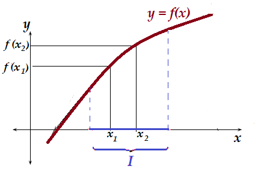
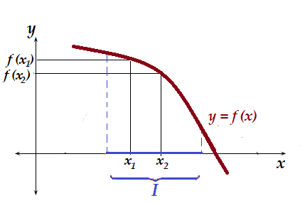
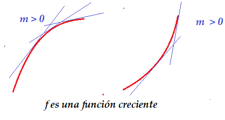
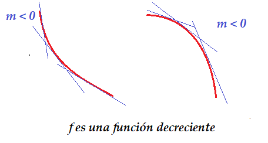
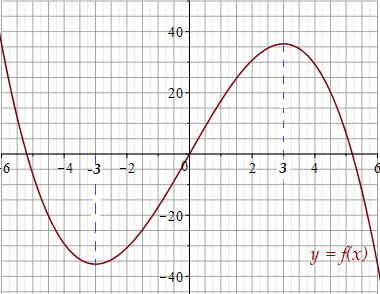
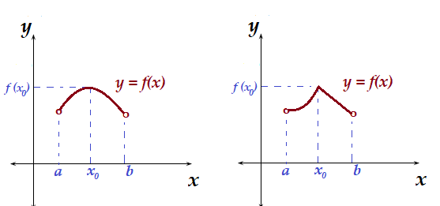
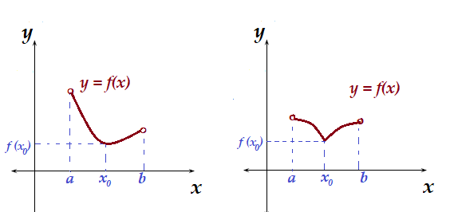
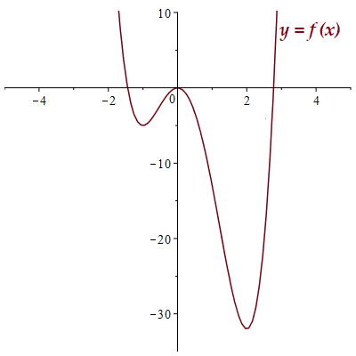
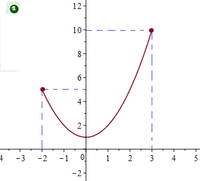
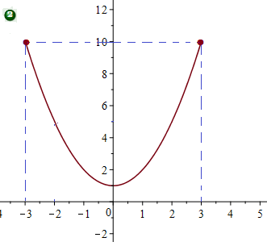

Matemáticas
Auditoría e Ingeniería en Control de Gestión
Contador Público y Auditor

Monotonía de funciones
Dada una función \(f\), decimos que es creciente en el intervalo \(I\), si para dos números cualesquiera \(x_1, \, x_2\) en \(I\), donde \(x_1 < x_2\), se cumple que \(f(x_1) < f(x_2)\).

Monotonía de funciones
Dada una función \(f\), decimos que es decreciente en el intervalo \(I\), si para dos números cualesquiera \(x_1, \, x_2\) en \(I\), donde \(x_1 < x_2\), se cumple que \(f(x_1) > f(x_2)\).

¿Cómo determinar si una función es creciente o decreciente?
Podemos observar que si \(f\) es una función creciente, las pendientes de las rectas tangentes son positivas y en el caso de una función decreciente, las pendientes de las rectas tangentes son negativas.


Criterio de la primera derivada para funciones crecientes y decrecientes
Sea \(f\) una función diferenciable en el intervalo \((a,b)\), entonces:
-
Si \(f'(x) >0\) para todo \(x\) en \((a,b)\), entonces \(f\) es creciente en \((a,b)\).
-
Si \(f'(x) <0\) para todo \(x\) en \((a,b)\), entonces \(f\) es decreciente en \((a,b)\).
Determinar los intervalos de crecimiento y de decrecimientos de la función \(\displaystyle f(x) = 18x - \frac{2}{3} x^3\)
Ejemplos
Determinar los intervalos de crecimiento y de decrecimientos de la función \(\displaystyle f(x) = 18x - \frac{2}{3} x^3\)

Extremos de una función
Una función \(f\) tiene un máximo local (o relativo) en \(x=x_0\), si existe un intervalo abierto \(I=(a,b)\) que contenga a \(x_0\) sobre el cual \(f(x_0) > f(x)\) para todo \(x\) en el intervalo \((a,b)\).

También decimos que el (valor) máximo relativo es \(f(x_0)\) y se alcanza en \(x=x_0\).
Extremos de una función
Una función \(f\) tiene un mínimo local (o relativo) en \(x=x_0\), si existe un intervalo abierto \(I=(a,b)\) que contenga a \(x_0\) sobre el cual \(f(x_0) < f(x)\) para todo \(x\) en el intervalo \((a,b)\).

También decimos que el (valor) mínimo relativo es \(f(x_0)\) y se alcanza en \(x=x_0\).
Puntos críticos
Un punto crítico para una función \(f\) es un número \(x=c\) en el dominio de \(f\) tal que: \[f'(c)=0 \, \quad \text{o} \quad \, f'(c) \, \, \text{ no existe.}\]
Encontrar los puntos críticos de las siguientes funciones
-
\(f(x) = x^3+3x^2-24x\)
-
\(f(x) = x-\ln (x)\)
Si \(f\) tiene un máximo o un mínimo local en \(x=c\), entonces \(c\) es un punto crítico de \(f\).
Ejemplos
Encontrar máximos y mínimos locales (si existen) de la función \(f(x) = 3x^4-4x^3-12x^2\)

Criterio de la primera derivada para los extremos relativos
-
Calcular \(f'(x)\).
-
Determinar todos los puntos críticos de \(f\), es decir, todos los \(x\) en que \(f'(x)=0\) o no está definida.
-
Determinar los intervalos de crecimiento y de decrecimiento de \(f\), es decir determinar donde \(f'(x)>0\) y donde \(f'(x)<0\).
-
Para cada valor crítico \(c\) en que \(f\) es continua, determinar si \(f'(x)\) cambia de signo cuando \(x\) crece al pasar por \(c\).
-
Habrá un máximo relativo en \(x=c\), si \(f'(x)\) cambia de signo, de \(+\) a \(-\), al ir de izquierda a derecha, y habrá un mínimo relativo si \(f'(x)\) cambia de signo, de \(-\) a \(+\) al ir de izquierda a derecha. Si \(f'(x)\) no cambia de signo, no habrá un extremo relativo cuando \(x=c\).
Ejemplos
Encontrar valores máximos y mínimos relativos de \(f\), si es que existen.
-
\(\displaystyle f(x) = -\frac{x^3}{3}-2x^2+5x-2\)
-
\(\displaystyle f(x) = \frac{x^2+x+1}{x+1}\)
-
\(\displaystyle f(x) = x^2 e^{-x}\)
Extremos Absolutos
-
El máximo absoluto de una función \(f\), es el valor más grande que toma la función en todo su dominio. Es decir:
\(f(c)\) es el máximo absoluto si \(\displaystyle f(c) \geq f(x)\) para todo \(x\) en el dominio de \(f\).
-
El mínimo absoluto de una función \(f\), es el valor más pequeño que toma la función en todo su dominio. Es decir:
\(f(c)\) es el mínimo absoluto si \(\displaystyle f(c) \leq f(x)\) para todo \(x\) en el dominio de \(f\).
Usar el gráfico de la función \(f(x) = x^2+1\) para determinar, si existen, el máximo y mínimo absoluto de la función.
Extremos Absolutos
-
Determinar el máximo y/o mínimo absoluto de \(f(x) = x^2+1\) en el intervalo \([-2,3]\).

-
Determinar el máximo y/o mínimo absoluto de \(f(x) = x^2+1\) en el intervalo \([-3,3]\)

Extremos Absolutos
Una función \(f(x)\) continua en un intervalo cerrado \([a,b]\) siempre tiene máximo absoluto y un mínimo absoluto en dicho intervalo.
Para utilizar este teorema se utiliza el siguiente procedimiento
-
Se determinan los puntos críticos para la función \(f\) que están en el intervalo \([a,b]\).
-
Se evalúan en la función los puntos críticos junto con \(x=a\) y \(x=b\).
-
En los valores obtenidos se buscan el valor máximo y el valor mínimo.
Determinar el máximo y mínimo absoluto de la función \(f(x)=4-x^2\) en el intervalo \([-1,2]\).
Ejercicios
Determinar el valor máximo y mínimo absoluto de las siguientes funciones en el intervalo dado.
-
\(f(x) = x^3-3x^2+1\) en el intervalo \([-2,4]\)
-
\(f(x) = x^3-3x^2-9x+1\) en el intervalo \([-5,5]\)
-
\(f(x) = \ln (x^2+1)\) en el intervalo \([ -1,2 ]\)